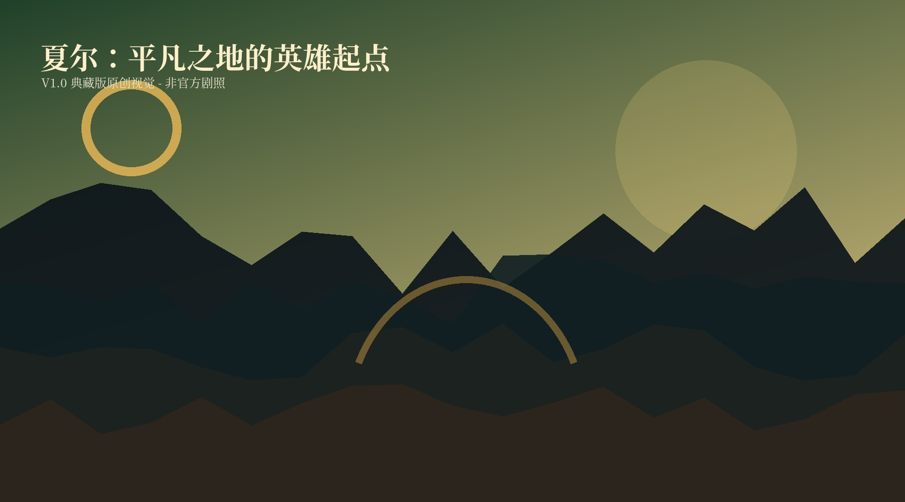
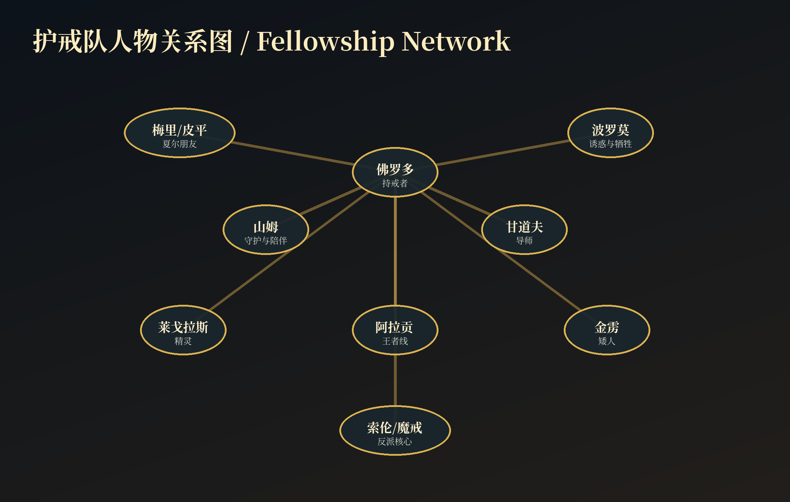
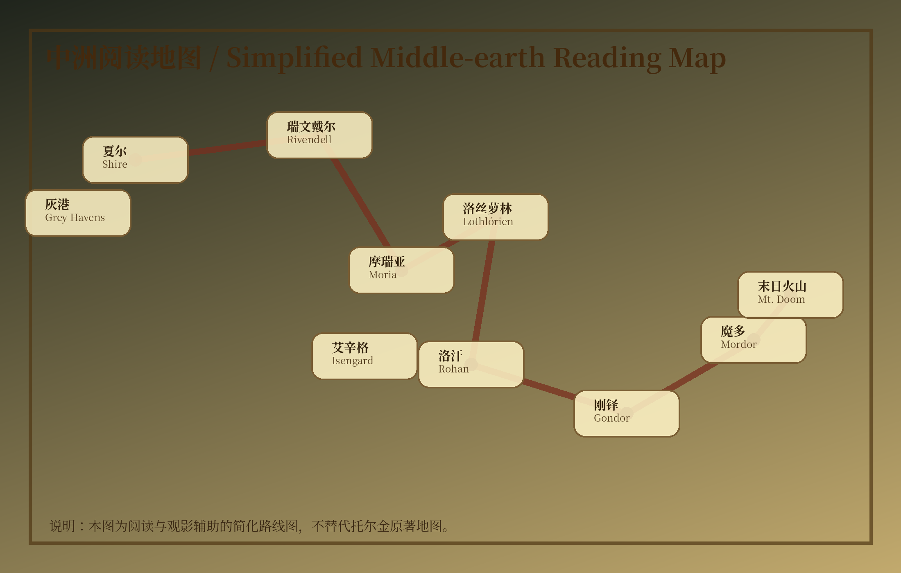
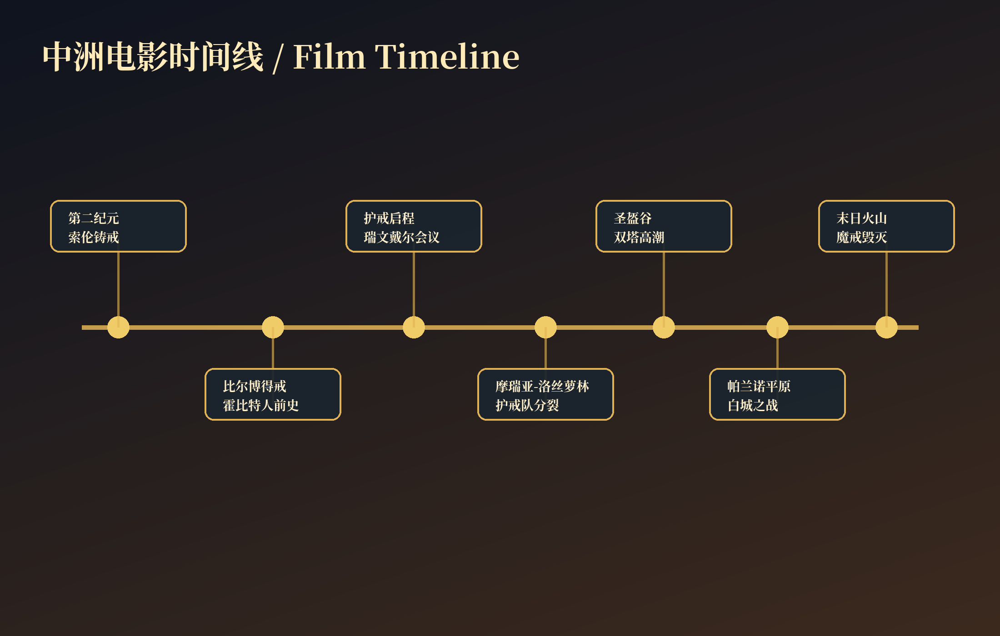

目录
01 作品起源与电影定位
核心定位
彼得·杰克逊执导的三部曲把托尔金的现代奇幻文学传统转化为兼具神话、冒险、战争、友情与牺牲的电影史诗。电影三部曲分别于2001、2002、2003年推出，构成一个几乎连续展开的长篇银幕叙事。
为什么经得起反复观看
它不是单纯靠奇观取胜，而是把人物弧线、地理行进、音乐主题、道具象征和战争规模全部编织在一起。观众每重看一次，都会在细节里发现新的呼应。
02 三部曲完整剧情导览
护戒使者
The Fellowship of the Ring2001
从夏尔到瑞文戴尔，再到摩瑞亚与阿蒙汉，主题是“平凡者承担不可能的任务”。
双塔奇兵
The Two Towers2002
三线叙事展开：弗罗多与山姆深入魔多边界；阿拉贡等人在洛汗参与圣盔谷；梅里和皮平引出树人。
王者归来
The Return of the King2003
刚铎、洛汗和魔多三条命运线合流，影片以末日火山和黑门决战完成史诗收束。

03 人物群像
佛罗多
持戒者，承担故事中最沉重的心理压力。
山姆
护戒故事的情感核心，代表忠诚、照料与坚持。
甘道夫
导师型角色，连接远古知识、道德判断和行动召唤。
阿拉贡
从流亡者到国王，人物弧线体现责任的觉醒。
莱戈拉斯
精灵视角的优雅、敏捷与长寿记忆。
金雳
矮人荣誉、幽默和与精灵和解的象征。
波罗莫
被魔戒诱惑，却以牺牲完成自我救赎。
咕噜
最复杂的镜像角色，显示魔戒腐蚀与怜悯主题。
亚玟
将爱情、永生选择和人类时代相连。
凯兰崔尔
古老精灵王权与诱惑测试的化身。
萨鲁曼
智慧堕落的例子，警示技术与权力联盟。
索伦
没有完整实体却无处不在的压迫性反派。
伊欧玟
突破命运标签，以勇气改写战场。
法拉墨
与波罗莫形成对照，代表自制与判断。
希优顿
从沉睡王权到骑兵号角，完成王者回归的另一面。

04 中洲地理与文明
夏尔
绿色、日常、烟火气，凸显“值得保卫的生活”。
瑞文戴尔
会议与智慧之地，护戒队正式形成。
摩瑞亚
地下王国废墟，把探险片、恐怖片和史诗感融合。
洛丝萝林
精灵圣地，给护戒队以最后的祝福。
洛汗
草原王国，影片最具骑兵史诗感的文化空间。
刚铎
白城米那斯提力斯，承载人类王权与最后防线。
艾辛格
萨鲁曼的工业化战争机器。
魔多
权力欲望和环境毁坏具象化的黑暗之地。
灰港
离别、疗愈和神话归航。

05 至尊魔戒的意义
至尊魔戒的意义 · 重点1
本节从电影叙事、视觉设计、人物动机和主题象征四个角度整理观影要点。重点不是背诵设定，而是理解：每一处场景、道具、战争和音乐如何服务于“权力诱惑、微小者改变未来、怜悯与责任”的总主题。
至尊魔戒的意义 · 重点2
本节从电影叙事、视觉设计、人物动机和主题象征四个角度整理观影要点。重点不是背诵设定，而是理解：每一处场景、道具、战争和音乐如何服务于“权力诱惑、微小者改变未来、怜悯与责任”的总主题。
至尊魔戒的意义 · 重点3
本节从电影叙事、视觉设计、人物动机和主题象征四个角度整理观影要点。重点不是背诵设定，而是理解：每一处场景、道具、战争和音乐如何服务于“权力诱惑、微小者改变未来、怜悯与责任”的总主题。
至尊魔戒的意义 · 重点4
本节从电影叙事、视觉设计、人物动机和主题象征四个角度整理观影要点。重点不是背诵设定，而是理解：每一处场景、道具、战争和音乐如何服务于“权力诱惑、微小者改变未来、怜悯与责任”的总主题。
至尊魔戒的意义 · 重点5
本节从电影叙事、视觉设计、人物动机和主题象征四个角度整理观影要点。重点不是背诵设定，而是理解：每一处场景、道具、战争和音乐如何服务于“权力诱惑、微小者改变未来、怜悯与责任”的总主题。
至尊魔戒的意义 · 重点6
本节从电影叙事、视觉设计、人物动机和主题象征四个角度整理观影要点。重点不是背诵设定，而是理解：每一处场景、道具、战争和音乐如何服务于“权力诱惑、微小者改变未来、怜悯与责任”的总主题。
06 种族与势力
种族与势力 · 重点1
本节从电影叙事、视觉设计、人物动机和主题象征四个角度整理观影要点。重点不是背诵设定，而是理解：每一处场景、道具、战争和音乐如何服务于“权力诱惑、微小者改变未来、怜悯与责任”的总主题。
种族与势力 · 重点2
本节从电影叙事、视觉设计、人物动机和主题象征四个角度整理观影要点。重点不是背诵设定，而是理解：每一处场景、道具、战争和音乐如何服务于“权力诱惑、微小者改变未来、怜悯与责任”的总主题。
种族与势力 · 重点3
本节从电影叙事、视觉设计、人物动机和主题象征四个角度整理观影要点。重点不是背诵设定，而是理解：每一处场景、道具、战争和音乐如何服务于“权力诱惑、微小者改变未来、怜悯与责任”的总主题。
种族与势力 · 重点4
本节从电影叙事、视觉设计、人物动机和主题象征四个角度整理观影要点。重点不是背诵设定，而是理解：每一处场景、道具、战争和音乐如何服务于“权力诱惑、微小者改变未来、怜悯与责任”的总主题。
种族与势力 · 重点5
本节从电影叙事、视觉设计、人物动机和主题象征四个角度整理观影要点。重点不是背诵设定，而是理解：每一处场景、道具、战争和音乐如何服务于“权力诱惑、微小者改变未来、怜悯与责任”的总主题。
种族与势力 · 重点6
本节从电影叙事、视觉设计、人物动机和主题象征四个角度整理观影要点。重点不是背诵设定，而是理解：每一处场景、道具、战争和音乐如何服务于“权力诱惑、微小者改变未来、怜悯与责任”的总主题。
07 武器、道具与象征
武器、道具与象征 · 重点1
本节从电影叙事、视觉设计、人物动机和主题象征四个角度整理观影要点。重点不是背诵设定，而是理解：每一处场景、道具、战争和音乐如何服务于“权力诱惑、微小者改变未来、怜悯与责任”的总主题。
武器、道具与象征 · 重点2
本节从电影叙事、视觉设计、人物动机和主题象征四个角度整理观影要点。重点不是背诵设定，而是理解：每一处场景、道具、战争和音乐如何服务于“权力诱惑、微小者改变未来、怜悯与责任”的总主题。
武器、道具与象征 · 重点3
本节从电影叙事、视觉设计、人物动机和主题象征四个角度整理观影要点。重点不是背诵设定，而是理解：每一处场景、道具、战争和音乐如何服务于“权力诱惑、微小者改变未来、怜悯与责任”的总主题。
武器、道具与象征 · 重点4
本节从电影叙事、视觉设计、人物动机和主题象征四个角度整理观影要点。重点不是背诵设定，而是理解：每一处场景、道具、战争和音乐如何服务于“权力诱惑、微小者改变未来、怜悯与责任”的总主题。
武器、道具与象征 · 重点5
本节从电影叙事、视觉设计、人物动机和主题象征四个角度整理观影要点。重点不是背诵设定，而是理解：每一处场景、道具、战争和音乐如何服务于“权力诱惑、微小者改变未来、怜悯与责任”的总主题。
武器、道具与象征 · 重点6
本节从电影叙事、视觉设计、人物动机和主题象征四个角度整理观影要点。重点不是背诵设定，而是理解：每一处场景、道具、战争和音乐如何服务于“权力诱惑、微小者改变未来、怜悯与责任”的总主题。
08 战争场面与战术结构
战争场面与战术结构 · 重点1
本节从电影叙事、视觉设计、人物动机和主题象征四个角度整理观影要点。重点不是背诵设定，而是理解：每一处场景、道具、战争和音乐如何服务于“权力诱惑、微小者改变未来、怜悯与责任”的总主题。
战争场面与战术结构 · 重点2
本节从电影叙事、视觉设计、人物动机和主题象征四个角度整理观影要点。重点不是背诵设定，而是理解：每一处场景、道具、战争和音乐如何服务于“权力诱惑、微小者改变未来、怜悯与责任”的总主题。
战争场面与战术结构 · 重点3
本节从电影叙事、视觉设计、人物动机和主题象征四个角度整理观影要点。重点不是背诵设定，而是理解：每一处场景、道具、战争和音乐如何服务于“权力诱惑、微小者改变未来、怜悯与责任”的总主题。
战争场面与战术结构 · 重点4
本节从电影叙事、视觉设计、人物动机和主题象征四个角度整理观影要点。重点不是背诵设定，而是理解：每一处场景、道具、战争和音乐如何服务于“权力诱惑、微小者改变未来、怜悯与责任”的总主题。
战争场面与战术结构 · 重点5
本节从电影叙事、视觉设计、人物动机和主题象征四个角度整理观影要点。重点不是背诵设定，而是理解：每一处场景、道具、战争和音乐如何服务于“权力诱惑、微小者改变未来、怜悯与责任”的总主题。
战争场面与战术结构 · 重点6
本节从电影叙事、视觉设计、人物动机和主题象征四个角度整理观影要点。重点不是背诵设定，而是理解：每一处场景、道具、战争和音乐如何服务于“权力诱惑、微小者改变未来、怜悯与责任”的总主题。
09 电影语言与叙事方法
电影语言与叙事方法 · 重点1
本节从电影叙事、视觉设计、人物动机和主题象征四个角度整理观影要点。重点不是背诵设定，而是理解：每一处场景、道具、战争和音乐如何服务于“权力诱惑、微小者改变未来、怜悯与责任”的总主题。
电影语言与叙事方法 · 重点2
本节从电影叙事、视觉设计、人物动机和主题象征四个角度整理观影要点。重点不是背诵设定，而是理解：每一处场景、道具、战争和音乐如何服务于“权力诱惑、微小者改变未来、怜悯与责任”的总主题。
电影语言与叙事方法 · 重点3
本节从电影叙事、视觉设计、人物动机和主题象征四个角度整理观影要点。重点不是背诵设定，而是理解：每一处场景、道具、战争和音乐如何服务于“权力诱惑、微小者改变未来、怜悯与责任”的总主题。
电影语言与叙事方法 · 重点4
本节从电影叙事、视觉设计、人物动机和主题象征四个角度整理观影要点。重点不是背诵设定，而是理解：每一处场景、道具、战争和音乐如何服务于“权力诱惑、微小者改变未来、怜悯与责任”的总主题。
电影语言与叙事方法 · 重点5
本节从电影叙事、视觉设计、人物动机和主题象征四个角度整理观影要点。重点不是背诵设定，而是理解：每一处场景、道具、战争和音乐如何服务于“权力诱惑、微小者改变未来、怜悯与责任”的总主题。
电影语言与叙事方法 · 重点6
本节从电影叙事、视觉设计、人物动机和主题象征四个角度整理观影要点。重点不是背诵设定，而是理解：每一处场景、道具、战争和音乐如何服务于“权力诱惑、微小者改变未来、怜悯与责任”的总主题。
10 幕后制作与新西兰取景
幕后制作与新西兰取景 · 重点1
本节从电影叙事、视觉设计、人物动机和主题象征四个角度整理观影要点。重点不是背诵设定，而是理解：每一处场景、道具、战争和音乐如何服务于“权力诱惑、微小者改变未来、怜悯与责任”的总主题。
幕后制作与新西兰取景 · 重点2
本节从电影叙事、视觉设计、人物动机和主题象征四个角度整理观影要点。重点不是背诵设定，而是理解：每一处场景、道具、战争和音乐如何服务于“权力诱惑、微小者改变未来、怜悯与责任”的总主题。
幕后制作与新西兰取景 · 重点3
本节从电影叙事、视觉设计、人物动机和主题象征四个角度整理观影要点。重点不是背诵设定，而是理解：每一处场景、道具、战争和音乐如何服务于“权力诱惑、微小者改变未来、怜悯与责任”的总主题。
幕后制作与新西兰取景 · 重点4
本节从电影叙事、视觉设计、人物动机和主题象征四个角度整理观影要点。重点不是背诵设定，而是理解：每一处场景、道具、战争和音乐如何服务于“权力诱惑、微小者改变未来、怜悯与责任”的总主题。
幕后制作与新西兰取景 · 重点5
本节从电影叙事、视觉设计、人物动机和主题象征四个角度整理观影要点。重点不是背诵设定，而是理解：每一处场景、道具、战争和音乐如何服务于“权力诱惑、微小者改变未来、怜悯与责任”的总主题。
幕后制作与新西兰取景 · 重点6
本节从电影叙事、视觉设计、人物动机和主题象征四个角度整理观影要点。重点不是背诵设定，而是理解：每一处场景、道具、战争和音乐如何服务于“权力诱惑、微小者改变未来、怜悯与责任”的总主题。
11 特效、化妆、服装与实景工艺
特效、化妆、服装与实景工艺 · 重点1
本节从电影叙事、视觉设计、人物动机和主题象征四个角度整理观影要点。重点不是背诵设定，而是理解：每一处场景、道具、战争和音乐如何服务于“权力诱惑、微小者改变未来、怜悯与责任”的总主题。
特效、化妆、服装与实景工艺 · 重点2
本节从电影叙事、视觉设计、人物动机和主题象征四个角度整理观影要点。重点不是背诵设定，而是理解：每一处场景、道具、战争和音乐如何服务于“权力诱惑、微小者改变未来、怜悯与责任”的总主题。
特效、化妆、服装与实景工艺 · 重点3
本节从电影叙事、视觉设计、人物动机和主题象征四个角度整理观影要点。重点不是背诵设定，而是理解：每一处场景、道具、战争和音乐如何服务于“权力诱惑、微小者改变未来、怜悯与责任”的总主题。
特效、化妆、服装与实景工艺 · 重点4
本节从电影叙事、视觉设计、人物动机和主题象征四个角度整理观影要点。重点不是背诵设定，而是理解：每一处场景、道具、战争和音乐如何服务于“权力诱惑、微小者改变未来、怜悯与责任”的总主题。
特效、化妆、服装与实景工艺 · 重点5
本节从电影叙事、视觉设计、人物动机和主题象征四个角度整理观影要点。重点不是背诵设定，而是理解：每一处场景、道具、战争和音乐如何服务于“权力诱惑、微小者改变未来、怜悯与责任”的总主题。
特效、化妆、服装与实景工艺 · 重点6
本节从电影叙事、视觉设计、人物动机和主题象征四个角度整理观影要点。重点不是背诵设定，而是理解：每一处场景、道具、战争和音乐如何服务于“权力诱惑、微小者改变未来、怜悯与责任”的总主题。
12 配乐与主题曲导赏
霍华德·肖尔的配乐通过主题动机把夏尔、洛汗、刚铎、魔多、魔戒与人物命运绑定在一起。本电子书底部控制台可在页面内切换第三方音乐嵌入；播放能力受平台、地区和登录状态影响。
Concerning Hobbits
Howard Shore
夏尔主题，最适合作为轻柔阅读背景。
May It Be
Enya / Howard Shore
《护戒使者》片尾歌曲，代表旅程与祝福。
The Bridge of Khazad Dum
Howard Shore
摩瑞亚与炎魔段落的史诗张力。
The Riders of Rohan
Howard Shore
洛汗主题，号角与骑兵精神。
The Lighting of the Beacons
Howard Shore
烽火传讯，视觉与音乐共同升华。
Into the West
Annie Lennox / Howard Shore
《王者归来》片尾歌曲，告别与归航。
13 奥斯卡与历史地位
《王者归来》在第76届奥斯卡获得11项提名并全部获奖，完成影史级“横扫”。这种奖项结果不是单独嘉奖一部影片，也被普遍视为对三部曲整体工业、艺术与文化影响的集中认可。
14 小说与电影差异
删改原因
电影必须压缩篇幅、强化动作线和视觉节奏，因此会调整人物出场、部分支线、战斗结构和结尾重心。
阅读建议
先看电影建立空间感，再读原著补足语言、诗歌、历史纵深和被电影省略的段落。
15 与《霍比特人》的联系
《霍比特人》解释了比尔博如何得到戒指，也补足了孤山、矮人、精灵、甘道夫和索伦阴影再起的前史。

16 收藏观影路线与附录
| 路线 | 适合人群 | 建议 |
|---|---|---|
| 院线三部曲 | 第一次观看 | 节奏紧凑，先建立主线。 |
| 加长版三部曲 | 深度粉丝 | 补足人物与世界细节。 |
| 《霍比特人》+《指环王》 | 世界观收藏 | 先前传后正传，适合系统梳理。 |
参考来源
- Warner Bros. Pictures - Fellowship Extended Edition
- Wētā FX - Fellowship visual effects overview
- Wētā Workshop - physical manufacture for LOTR
- Academy of Motion Picture Arts and Sciences - 2004 memorable moments
- Howard Shore official site
- Tourism New Zealand - LOTR trilogy locations
版权说明：本包未内置任何官方电影剧照或受版权保护的完整音乐。经典音乐通过第三方合法嵌入/链接呈现；PPT内置离线音频为原创氛围曲，不是电影原声。